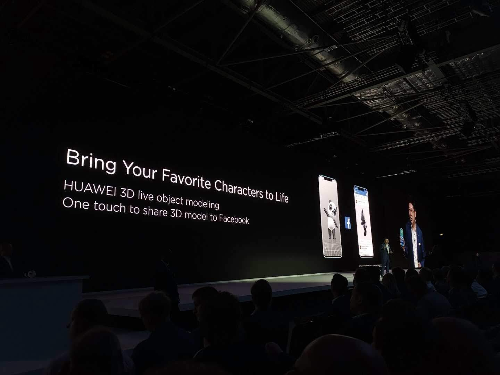
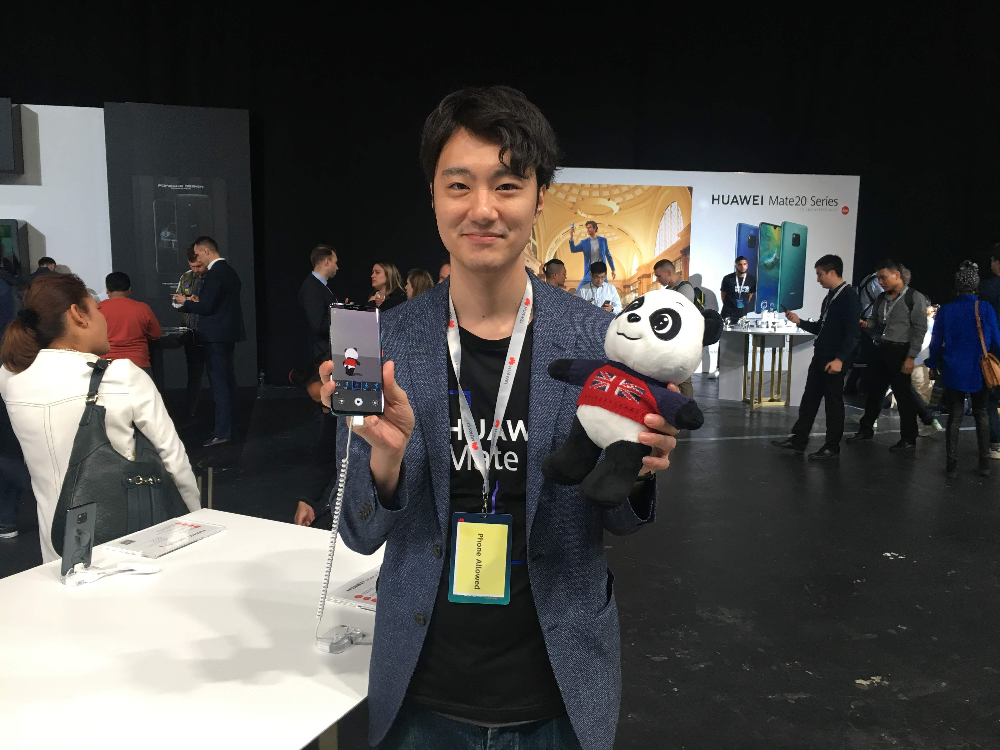

 [ YouTube ]
[ YouTube ]
[ YouTube ]
Inverview
How to enjoy?
Please use Mate20 Pro | P30 Pro Pro for using 3D depth sensor.I've shown the demo below.
Detail is shown in official page [ Link ]
CM
Media
- Smartmania: "Huawei vydalo 3D Live Maker: naskenuje objekty a promítne je do rozšířené reality" [ Link ]
- Digitaltrends: "Embrace your inner Dr. Frankenstein with the Huawei Mate 20 Pro and this cool app" [ Link ]
- Tweakers: "Huawei stelt 3D Live Maker-app voor de Mate 20 Pro beschikbaar" [ Link ]
- Curved: "Huawei Mate 20 Pro 3D-Scan: Objekte mit 3D Live Maker zum Leben erwecken" [ Link ]
- Gizlogic: "Huawei lanza la app 3D Live Maker de realidad aumentada" [ Link ]
- Engadget: "Mate 20 Proの3D Live Objectは、3Dスキャナ代わりにもなりそう" [ Link ]
- Mynavi: "余さず見せます！ ファーウェイの新スマホ「Mate 20」シリーズ発表会" [ Link ]
- Gsmarena: "Huawei's 3D Moderator app brings AR to the Mate 20 Pro and Porsche Design" [ Link ]
Patent
- OBJECT MODELING AND MOVEMENT METHOD AND APPARATUS, AND DEVICE [ Link ]
Publication
- 岩本 尚也, 佐藤 浩之, Bo Zheng,
3D LIVE MAKER: 好きなキャラクタに命を吹き込むまで,
VC2020, online,
2020.12.02-04 [ Paper ]